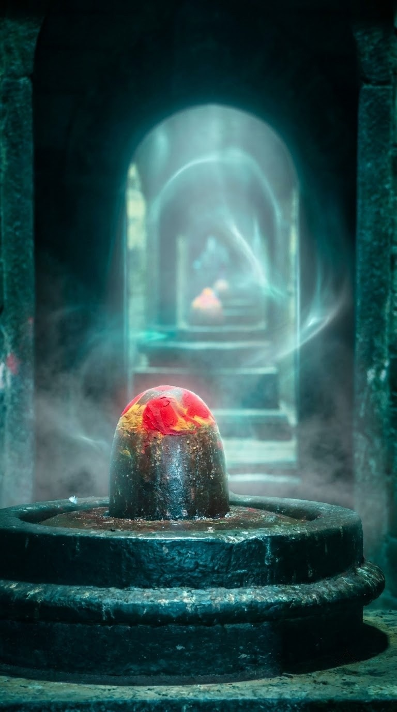
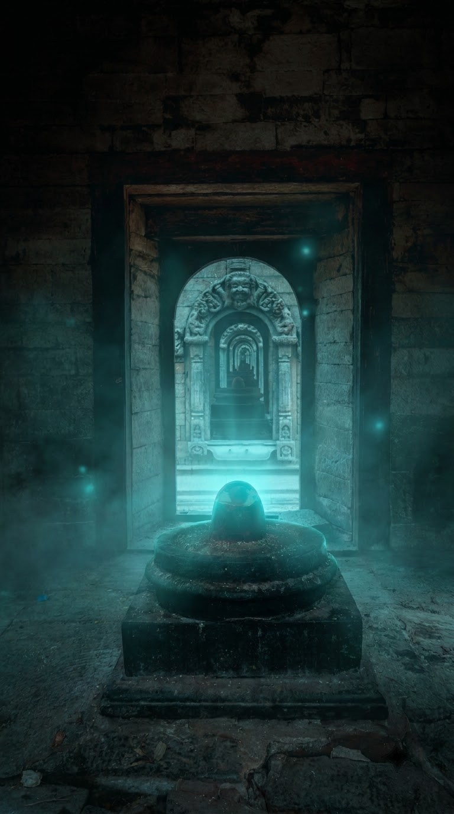

गैलरी: मंदिर, शिवलिंग और पूजा
उत्तर भारत के मंदिरों की वास्चित्र छह तस्वीरें, हर एक के साथ यह छोटा विवरण कि तस्वीर में वास्तव में क्या है और उसका महत्व क्यों है।
ये तस्वीरें क्या हैं। उत्तर भारत के मंदिरों की लाइसेंस प्राप्त स्टॉक तस्वीरें, जिन्हें इसलिए चुना गया है क्योंकि इनमें वही चीज़ें दिखती हैं जिन पर यह अभ्यास टिका है। ये कामाख्या मंदिर, मायोंग आश्रम या किसी पूजा की तस्वीरें नहीं हैं। इस पेज की किसी भी चीज़ को किसी परिणाम के प्रमाण के रूप में न पढ़ें, और नीचे दिए गए विवरण बताते हैं कि तस्वीर में क्या है, न कि उससे क्या सिद्ध होता है।
छह तस्वीरें, और उनमें क्या है
नीचे हर तस्वीर के साथ उसका विवरण और एक छोटा टिप्पणी दिया गया है। विवरण बताता है कि वास्तव में दिख क्या रहा है, क्योंकि जानने योग्य यही है; टिप्पणी वह हिस्सा है जिस पर बहस की जा सकती है।

दीपक जलने के बाद
कामाख्या मंदिर में नौ साल के साधना का अर्थ था ऐसे आंगन में खड़े रहना, जब भीड़ जा चुकी हो और सिर्फ दीपक जल रहे हों। पहाड़ी से कोहरा उम्मीद से कहीं जल्दी उठता है, और आधी रात बाद तक पत्थर ठंडक देता रहता है। असली काम भी प्रायः इसी घंटे होता है, क्योंकि भीड़ के सामने की पूजा और जो देय है उसके लिए की गई पूजा एक जैसी नहीं निकलती।

मंदिर को नीचे से पढ़ना
शिखर ऐसा बनाया जाता है कि वह नीचे से ही पढ़ा जाए, और यही वह एक जगह है जहाँ से उसे देखा जाना चाहिए। रिब पूरी ऊँचाई तक नज़र को ऊपर उठाते हैं, और शिरो पर सुनहरा हिस्सा बची हुई रोशनी पकड़ लेता है। मंदिर के पंडित से इमारत की व्याख्या पूछिए, तो बात प्रायः यहीं से शुरू होती है, गर्भगृह से नहीं।

वो दो निशानी जो बताते हैं कोई आया था
माथे पर लगा सिंदूर और पैरों के पास रखे फूल, यही दो चीज़ें बताती हैं कि आज कोई यहाँ आया था। उसके ऊपर जो कुछ है वह सैकड़ों साल पहले की नक्काशी है और तब से उसे छुआ नहीं गया। यह आदत किसी मूर्ति में भी काम आती है, किसी तांत्रिक में भी: जो नया है उसे पहले देखिए, और सवाल उसी से शुरू कीजिए।


सिंदूर, गीला पत्थर और दूसरा दीपक
लिंग पर सिंदूर सजावट नहीं है। उसे लगाया जाता है और वैसे ही रहने दिया जाता है, और कुछ महीनों में नीचे का पत्थर गहरा पड़ जाता है तथा वह चमक पाने लगता है जो नए लगाए सिंदूर से नहीं आती। तस्वीर में जो दीपक जल रहा है वह दूसरा है; पहला भीतर जलता है और उसे कोई नहीं देखता। पूजा कैसे रची जाती है, यह समझने में यह छोटा सा अंतर काफी मदद करता है।


एक द्वार, फिर एक सीढ़ी, फिर एक और
पुराने मंदिरों की वास्तुकला बिना कुछ कहे आपको धीमा करने में बहुत अच्छी है। द्वार सँकरा होता जाता है, गलियारा अंधेरा, सीढ़ियां ऊंची, और शिवलिंग तक पहुँचते-पहुँचते आप कई सीमाएं पार कर चुके होते हैं। यह ध्यान के बारे में एक बनी हुई दलील है, और उस कमरे में पढ़े जाने वाले मंत्रों से कहीं पुरानी।

एक फूल, एक कतार, हर सुबह
शिवलिंगों की कतार पर एक गुड़हल रखना कोई खास अवसर नहीं, रोज़ का नियम है। ज़रूरी उसकी दोहराव है: वही काम, उन्हीं पत्थरों पर, जब तक पत्थर भी उससे बदल न जाएं। लोग पूछते हैं पूजा से क्या होता है। अक्सर सच्चा जवाब यही होता है कि बेचैन व्यक्ति को हर सुबह ठीक से करने के लिए एक काम मिल जाता है, और टिकाऊपन अक्सर यही निकलता है।
किसी भी मंदिर की तस्वीर में तीन बातें देखिए
क्या नया है। सिंदूर, फूल, ताज़ा तेल का दीपक, आधार के आसपास गीला पत्थर: ये ही वह बातें हैं जो बताती हैं कि कोई आज यहाँ आया था। तस्वीर में बाकी जो कुछ है वह कैमरा चलाने वाले व्यक्ति से भी पुराना है, और उसका कोई अंश भी इस सप्ताह जो हुआ उसका प्रमाण नहीं है।
सीमा कहाँ है। पुराने मंदिरों की वास्तुकला कुछ कहे बिना ही आपको धीमा कर देती है। द्वार सँकरा, गलियारा अंधेरा, सीढ़ियाँ ऊँची, और गर्भगृह तक पहुँचते-पहुँचते आप कई सीमाएं पार कर चुके होते हैं। यह ध्यान के बारे में एक बनी हुई दलील है।
क्या दोहराया गया है। शिवलिंगों की कतार पर रखा एक गुड़हल कोई अवसर नहीं, रोज़ का नियम है। पूजा का बड़ा हिस्सा दोहराव ही है, और यही कारण है कि पूजा के बाद आपको एक निर्देश नहीं, बल्कि एक दैनिक क्रिया दी जाती है।
ऐसे पेज जिन्हें अभ्यास से मिलाना जा सकता है
अतुल नाथ के बारे में में मायोंग और कामाख्या मंदिर में बीते वर्ष, और वह क्या नहीं करते, यह शामिल है।
असली तांत्रिक कैसे पहचानें में पैसे देने से पहले पूछे जाने योग्य सवाल दिए गए हैं, तस्वीरों वाला सवाल भी।
कामाख्या मंदिर के बारे में में मंदिर, उसकी तांत्रिक परंपरा और वहाँ की साधना के बारे में बताया गया है।
मायोंग किसके लिए प्रसिद्ध है में यह समझाया गया है कि मुरिगांव जिले में अभ्यास क्यों तरीके-मंत्र पर टिका है, न कि दिखावे पर।
बुकिंग से पहले पूछ लीजिए। किसी मंदिर की तस्वीर यह नहीं बता सकती कि आपकी स्थिति में काम होगा या नहीं। पंद्रह मिनट की फोन बातचीत बता सकती है, और पहली बातचीत निःशुल्क है। +91 9365474087 पर कॉल कीजिए।
इन तस्वीरों के बारे में
क्या ये तस्वीरें कामाख्या मंदिर की हैं?
नहीं, और यह साफ़ कह देना ज़रूरी है। ये उत्तर भारत के मंदिरों की लाइसेंस प्राप्त तस्वीरें हैं, जिन्हें इसलिए चुना गया है क्योंकि इनमें वही चीज़ें दिखती हैं जिन पर काम टिका होता है: शिखर, शिवलिंग, पूजा की सामग्री, और काम चलने वाले मंदिर की हालत। ये किसी पूजा का दस्तावेज़ नहीं हैं, और इनमें से कोई भी कामाख्या मंदिर या मायोंग आश्रम की किसी विशेष पूजा को नहीं दिखाती।
तस्वीरें लगाई ही क्यों गईं?
क्योंकि इस काम के बारे में की गई यह साइट वरना सिर्फ दावों का एक ढेर है। बाकी पूरी साइट इस तरह लिखी गई है कि उसकी जाँच असम के तांत्रिक परंपरा की जानकारी से की जा सके, और मंदिर की वास्तुकला, पूजा और परिस्थिति की तस्वीरें वह हिस्सा हैं जिसे देखा जा सकता है, बिना विश्वास किए। निदान, कीमत और परिणाम के बारे में जो दावे किए गए हैं, वे नीचे दिए लिंक वाले पेजों पर शब्दों में लिखे हैं, जहाँ उन पर बहस हो सकती है।
क्या इन तस्वीरों से कोई गारंटी मिलती है?
नहीं। किसी मंदिर की तस्वीर यह नहीं बताती कि आपकी समस्या ठीक होगी या नहीं, और इसे ऐसा नहीं पढ़ा जाना चाहिए। आपकी स्थिति पर काम हो सकता है या नहीं, यह आपकी कुंडली पढ़कर और आपसे बात करके तय होता है, तस्वीर देखकर नहीं। +91 9365474087 पर कॉल कीजिए, और यही बातचीत किसी भी निर्णय से पहले हो जाती है।
क्या मैं ये तस्वीरें अपने पेज पर इस्तेमाल कर सकता हूँ?
कृपया नहीं। ये लाइसेंस प्राप्त स्टॉक तस्वीरें हैं, इसलिए अधिकार इनके फोटोग्राफरों के पास हैं, इस अभ्यास के पास नहीं। वे यहाँ एक पेज को समझाने के लिए हैं; इन्हें लिंक करना ठीक है, कॉपी करना नहीं।